Al je antwoorden worden gewist en je begint opnieuw. Weet je het zeker?
Jouw resultaten
Huid en Afweer · herkansing 2016‑2017
—
/ 54
0
Goed
0
Fout
0
Niet beantwoord
Vraag 1
Welk celorganel is zeer sterk ontwikkeld in steroïdhormoonvormende cellen?
Vraag 2
Naast organellen komen er ook insluitsels voor in het cytoplasma van cellen.
Welke twee onderstaande producten zijn voorbeelden van zulke insluitsels?
Meerdere antwoorden mogelijk.
Vraag 3
U ziet hier een opname van een delende cel.
Welke fase van de mitose wordt hier weergegeven?
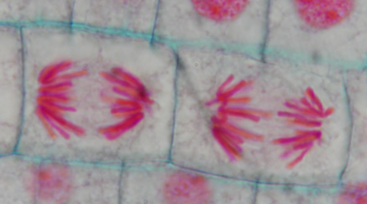
Vraag 4
Welke fase van de celdeling volgt er na replicatie van het DNA?
Vraag 5
Welke twee van de onderstaande moleculen hebben transporteiwitten nodig om door de celmembraan getransporteerd te worden?
Meerdere antwoorden mogelijk.
Vraag 6
Kies de juiste alternatieven.
De celcortex is voornamelijk opgebouwd uit en speelt een belangrijke rol in .
Vraag 7
Kies de juiste alternatieven.
Cholesterol is een molecuul en biedt aan celmembranen.
Vraag 8
Celorganellen, zoals mitochondria, worden in de uitlopers van zenuwcellen getransporteerd langs:
Vraag 9
Welke twee eiwitten zijn betrokken bij spiercontractie?
Vraag 10
Nadat u een bloeduitstrijkje heeft gemaakt bekijkt u deze onder de microscoop en ziet u onderstaand beeld.
Dit beeld past bij een:
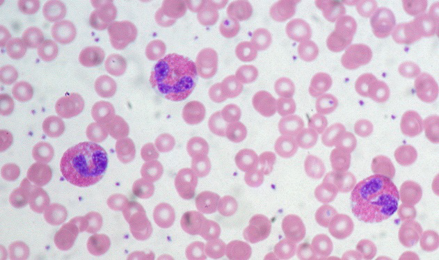
Vraag 11
Kies de juiste alternatieven.
Het complementsysteem behoort tot de component van het immuunsysteem.
Vraag 12
Kies de juiste alternatieven.
Neutrofielen zijn cellen die behoren tot immuunsysteem.
Vraag 13
In welke laag van de epidermis bevinden zich de cellichamen van melanocyten?
Vraag 14
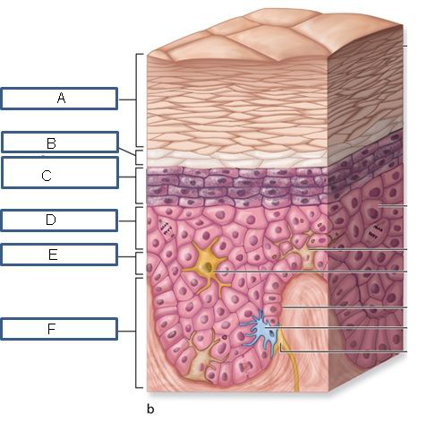
U ziet hier een schematische weergave van de huid. Plaats de structuren in het juiste kader (A t/m F).
Sleep een optie naar de bijbehorende rij, of tik eerst op een kaart en dan op een rij.
Kader A
Sleep hier naartoe
Kader B
Sleep hier naartoe
Kader C
Sleep hier naartoe
Kader D
Sleep hier naartoe
Kader E
Sleep hier naartoe
Kader F
Sleep hier naartoe
Vraag 15
Hoe noemen we de verbindingen tussen epitheelcellen en de onderliggende basaalmembraan?
Vraag 16
Welk type epitheel vormt de luminale zijde van de slokdarm zoals u in bovenstaande figuur kunt zien?
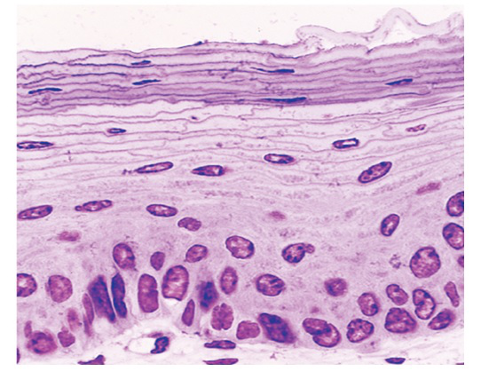
Vraag 17
Kies de juiste alternatieven.
Ischemie leidt tot een cytoplasmatische calciumspiegel, wat leidt tot van onder andere endonucleasen, resulterend in onder andere .
Vraag 18
Welke twee van de onderstaande moleculen spelen een rechtstreekse rol bij de extrinsieke apoptose-inductie?
Meerdere antwoorden mogelijk.
Vraag 19
Kies de juiste alternatieven.
Calcificatie in atherosclerose is een voorbeeld van calcificatie en calcificatie ten gevolge van hypervitaminose D is een voorbeeld van .
Vraag 20
Lichen simplex chronicus, seborrhoïsche keratose en actinische keratose zijn alle drie epidermale epitheelproliferaties.
Welke van de drie is een voorloper van plaveiselcelcarcinoom?
Vraag 21
Wat vinden patiënten volgens Kramer (2011) het belangrijkst in het contact met hun huisarts?
Vraag 22
Een arts twijfelt of hij zijn beroepsgeheim gaat doorbreken of niet. Een buurman van een van zijn patiënten heeft al diverse keren gebeld. De buurman maakt zich zorgen over zijn buurvrouw. Hij vraagt of de arts in actie wil komen.
Wat mag de arts met deze informatie doen?
Vraag 23
Een marathonloper meldt zich bij de huisarts. Hij wil een medische verklaring waarin staat dat hij de komende vier weken niet in staat is om een marathon te lopen. Hij is niet fit. Hij wil heel graag op vakantie maar zijn sponsorcontract verplicht hem om over vier weken aan een marathon in Duitsland mee te doen.
Wat mag de arts in deze verklaring schrijven?
Vraag 24
Kies de juiste alternatieven.
Op het spreekuur van de huisarts komt een 56-jarige, onverzorgde meneer zonder vaste woon- of verblijfplaats; hij ruikt naar urine en alcohol. Voordat jij (stagiair) hem een hand geeft, doe je eerst handschoenen aan en daarna schud je hem de hand. Het bespreken van het gevoel van weerzin is . Het bespreken van de risico's die zijn leefgedrag met zich meebrengt is .
Vraag 25
Het intracellulaire vochtcompartiment:
Vraag 26
Warmteafgifte vindt op verschillende manieren plaats.
Hoe wordt de afgifte genoemd als het plaatsvindt indien iemand in een afkoelend bad zit?
Vraag 27
Een proefpersoon heeft zijn hand in een bak met water van 37°C.
Bij deze temperatuur adapteren:
Vraag 28
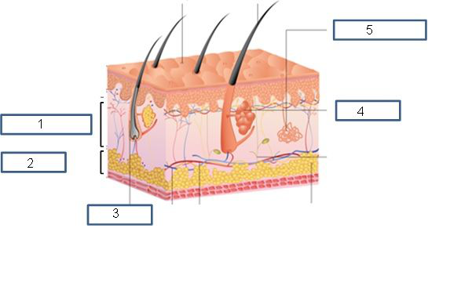
Plaats in onderstaande schematisch overzicht van de huid de verschillende structuren en onderdelen (1 t/m 5).
Sleep een optie naar de bijbehorende rij, of tik eerst op een kaart en dan op een rij.
Nummer 1
Sleep hier naartoe
Nummer 2
Sleep hier naartoe
Nummer 3
Sleep hier naartoe
Nummer 4
Sleep hier naartoe
Nummer 5
Sleep hier naartoe
Vraag 29
Welke twee onderstaande morfologische kenmerken horen bij acuut eczeem?
Meerdere antwoorden mogelijk.
Vraag 30
Welke efflorescentie wordt hier getoond?
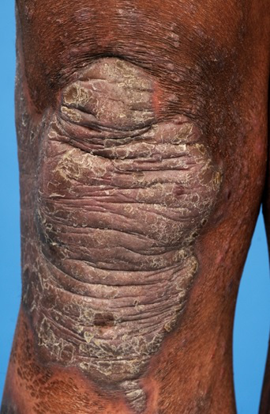
Vraag 31
Kies de juiste alternatieven.
In vergelijking met een blanke huid heeft een zwarte huid en .
Vraag 32
Waar bevinden zich voornamelijk apocriene klieren?
Vraag 33
Welke 2 foto's tonen typische kenmerken van constitutioneel eczeem?
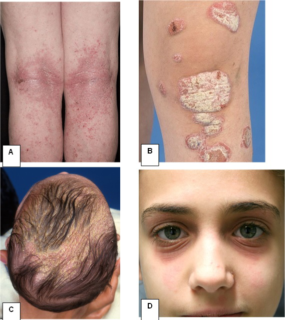
Meerdere antwoorden mogelijk.
Vraag 34
Tot welk diepte-niveau van de huid is deze efflorescentie gelegen?
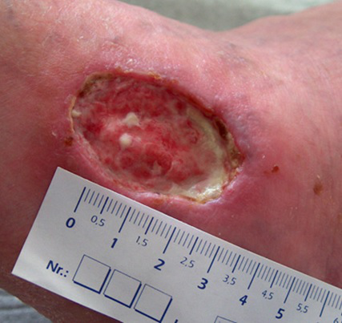
Vraag 35
U bent huisarts en ziet een 47-jarige schoonmaker vanwege “schrale handen”. De klachten van branderigheid nemen toe na contact met water en schoonmaakmiddelen. Hij draagt meestal geen handschoenen. Hij is goed gezond en niet atopisch. U ziet dat de rug van handen en vingers extreem droog is, met mild erytheem, schilfering en beginnende lichenificatie. Wat is de meest aangewezen lokale therapie? Kies per middel 'wel' of 'geen'.
emolliëns (neutrale creme/zalf)
klasse 2 corticosteroïdzalf
zinkoxide smeersel
Vraag 36
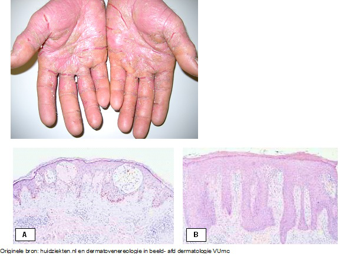
Kies de juiste alternatieven.
Welke pathologische kenmerken passen het best bij deze klinische foto? en .
Vraag 37
Kies de juiste alternatieven.
Het acrolentigineuze melanoom bevindt zich typisch op bij vrouwen en heeft een prognose.
Vraag 38
Welke twee onderstaande factoren behoren tot de kenmerken van een melanoom?
Meerdere antwoorden mogelijk.
Vraag 39
Mutaties en het reparatievermogen van DNA.
Kies de juiste alternatieven.
Door het reparatievermogen van DNA hebben de meeste mutaties effecten.
Vraag 40
Welk molecuul wordt hier aangegeven met het cijfer 2?
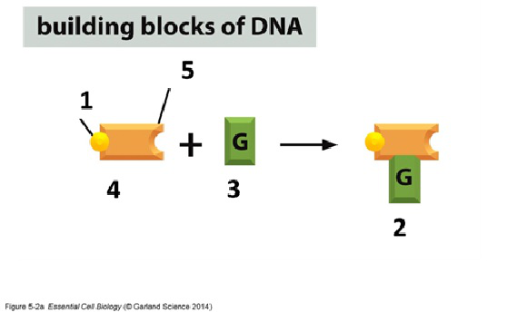
Vraag 41
Het karyogram in bovenstaande figuur is afkomstig van:
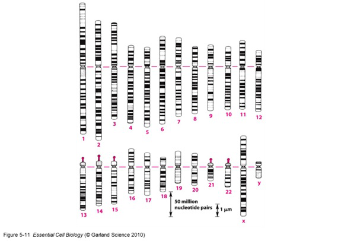
Vraag 42
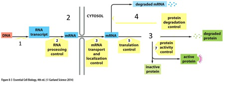
Zet onderstaande termen bij het juiste nummer in onderstaande figuur (1 t/m 4).
Sleep een optie naar de bijbehorende rij, of tik eerst op een kaart en dan op een rij.
Nummer 1
Sleep hier naartoe
Nummer 2
Sleep hier naartoe
Nummer 3
Sleep hier naartoe
Nummer 4
Sleep hier naartoe
Vraag 43
Hoe heet het grote lichtgroene molecuul in bovenstaande figuur?
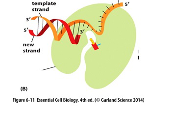
Vraag 44
In een willekeurig stuk DNA komen twee basen altijd precies even vaak voor, voor welke combinatie geldt dit?
Vraag 45
Welk molecuul ziet u in onderstaande figuur en in welke structuur?
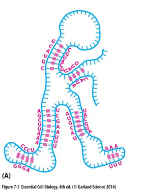
Vraag 46
Door de schadelijke invloed van bijvoorbeeld zonlicht en tabaksrook kan in het DNA een Cytosine veranderen in een Uracil.
Hoe heet dit proces?
Vraag 47
In onderstaande figuur ziet u een precursor (voorloper) cel die na celdeling diverse verschillende celtypes kan vormen.
Hoe noemt men deze eigenschap van een precursor cel?
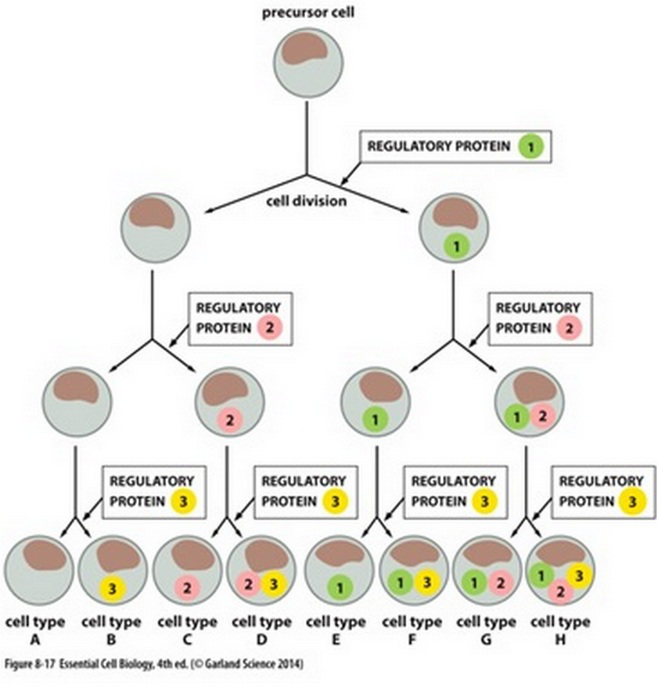
Vraag 48
Welk van de onderstaande beweringen is juist?
Vraag 49
Een uiterst stabiele verbinding in of tussen polypeptideketens wordt gevormd door zogenaamde zwavelbruggen (disulphide bonds).
Deze worden gevormd door het aminozuur:
Vraag 50
Aminozuurmodificatie door additie van bijvoorbeeld een suiker, lipide of fosfaat verandert de functie van eiwitten.
Wanneer vindt deze modificatie plaats?
Vraag 51
Waarom leidt een tekort aan vitamine C tot tandvleesproblemen en uiteindelijk scheurbuik (scurvy), beiden als gevolg van verzwakte collageenvorming?
Vraag 52
Onder ATP homeostase verstaan we het vermogen van de cel om een vrijwel constante hoeveelheid ATP te handhaven, onafhankelijk van de hoeveelheid energie die wordt verbruikt.
De reden daarvoor is dat:
Vraag 53
Acetyl-CoA wordt afgebroken in de citroenzuurcyclus tot het molecuul:
Vraag 54
Ontkoppeling van de elektrontransportketen in mitochondriën betekent dat: